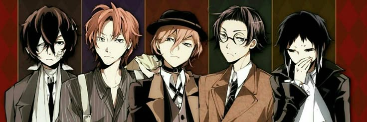

....Bungou Stray Dogs é um anime que combina elementos de detetive, ação e sobrenatural, tudo envolto em uma
atmosfera intrigante e com personagens inspirados em famosos escritores. A história se concentra em um grupo
de detetives com habilidades especiais, chamadas de "habilidades", que são manifestações dos poderes literários
de seus nomesakes.
....O protagonista, Atsushi Nakajima, um jovem órfão, é expulso de um orfanato e, em meio a sua desespero,
encontra uma agência de detetives peculiar. Lá, ele se junta a personagens excêntricos como Osamu Dazai,
um detetive suicida com uma habilidade de anular os poderes dos outros, e Doppo Kunikida, um homem extremamente
organizado com uma habilidade baseada em um caderno de anotações. Juntos, eles se envolvem em casos complexos e
perigosos, enfrentando tanto inimigos sobrenaturais quanto outros detetives com habilidades únicas.